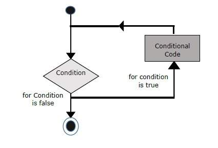
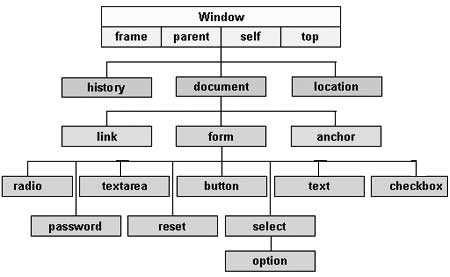

<!DOCTYPE html>
<html lang="en">
<link rel="stylesheet" href="style.css">
<link rel="stylesheet" href="all.css">
<link rel="stylesheet" href="format.css">

<body>

</body>

</html>

<div id="full">

    <div id="side">
        <a href="#1">Overview</a>
        <a href="#2">Placement</a>
        <a href="#3">Variables</a>
        <a href="#4">Conditional Statement</a>
        <a href="#5">While Loop</a>
        <a href="#6">For Loop</a>
        <a href="#7">Function</a>
        <a href="#8">Events</a>
        <a href="#9">Array</a>
        <a href="#10">HTML DOM</a>
    </div>

    <div id="cont">
        <div id="main">
            <div>
                <section id="1">
                    <h2>What is JavaScript ?</h2>
                    <p>JavaScript is a dynamic computer programming language. It is lightweight and most commonly used
                        as a part of web pages, whose implementations allow client-side script to interact with the user
                        and make dynamic pages. It is an interpreted programming language with object-oriented
                        capabilities.</p>

                    <h3>Client-Side JavaScript</h3>
                    <p>Client-side JavaScript is the most common form of the language. The script should be included in
                        or referenced by an HTML document for the code to be interpreted by the browser.</p>

                    <h3>Limitations of JavaScript</h3>
                    <p>We cannot treat JavaScript as a full-fledged programming language. It lacks the following
                        important features −</p>
                    <ul>
                        <li> Client-side JavaScript does not allow the reading or writing of files. This has been kept
                            for security reason.</li>
                        <li>JavaScript cannot be used for networking applications because there is no such support
                            available.</li>
                        <li> JavaScript doesn't have any multi-threading or multiprocessor capabilities.</li>
                    </ul>
                </section>
            </div>

            <div>
                <section id="2">
                    <h2>Placement</h2>
                    <p>There is a flexibility given to include JavaScript code anywhere in an HTML document. However the
                        most preferred ways to include JavaScript in an HTML file are as follows −</p>
                    <ul>
                        <li>Script in head section.</li>
                        <li>Script in body section.</li>
                        <li>Script in body and head sections.</li>
                        <li>Script in an external file and then include in head section.</li>
                    </ul>

                    <h3>Script in head section</h3>
                    <p>If you want to have a script run on some event, such as when a user clicks somewhere, then you
                        will place that script in the head .</p>

                    <h3>Script in body section</h3>
                    <p>If you need a script to run as the page loads so that the script generates content in the page,
                        then the script goes in the body portion of the document. In this case, you would not have any
                        function defined using JavaScript.</p>

                    <h3>Script in body and head sections</h3>
                    <p>You can put your JavaScript code in head and body section altogether.</p>

                    <h3>Script in an external file</h3>
                    <p>s you begin to work more extensively with JavaScript, you will be likely to find that there are
                        cases where you are reusing identical JavaScript code on multiple pages of a site.</p>
                    <p>You are not restricted to be maintaining identical code in multiple HTML files. The script tag
                        provides a mechanism to allow you to store JavaScript in an external file and then include it
                        into your HTML files.</p>
                </section>
            </div>

            <div>
                <section id="3">
                    <h2>Variables</h2>
                    <p>Like many other programming languages, JavaScript has variables. Variables can be thought of as
                        named containers. You can place data into these containers and then refer to the data simply by
                        naming the container.</p>

                    <h3>JavaScript Datatypes</h3>
                    <p>One of the most fundamental characteristics of a programming language is the set of data types it
                        supports. These are the type of values that can be represented and manipulated in a programming
                        language.</p>
                    <p>JavaScript allows you to work with three primitive data types −</p>
                    <ul>
                        <li>Numbers, eg. 123, 120.50 etc.</li>
                        <li>Strings of text e.g. "This text string" etc.</li>
                        <li>Boolean e.g. true or false.</li>
                    </ul>

                    <h3>JavaScript Variable Scope</h3>
                    <p>The scope of a variable is the region of your program in which it is defined. JavaScript
                        variables
                        have only two scopes.</p>

                    <ul>
                        <li>
                            <strong>Global Variables − </strong>
                            <p>A global variable has global scope which means it can be defined anywhere in your
                                JavaScript code.</p>
                        </li>
                        <li>
                            <strong>
                                Local Variables −</strong>
                            <p> A local variable will be visible only within a function where it is defined. Function
                                parameters are always local to that function.</p>
                        </li>
                    </ul>
                </section>
            </div>

            <div>
                <section id="4">
                    <h2>Conditional Statement</h2>
                    <p>While writing a program, there may be a situation when you need to adopt one out of a given set
                        of paths. In such cases, you need to use conditional statements that allow your program to make
                        correct decisions and perform right actions.</p>
                    <p>JavaScript supports conditional statements which are used to perform different actions based on
                        different conditions. Here we will explain the if..else statement.</p>
                    <h3>Flow Chart</h3>
                    
                </section>
            </div>

            <div>
                <section id="5">
                    <h2>While Loop</h2>
                    <p>The most basic loop in JavaScript is the while loop which would be discussed in this chapter. The
                        purpose of a while loop is to execute a statement or code block repeatedly as long as an
                        expression is true. Once the expression becomes false, the loop terminates.</p>
                    <h3>Flow Chart</h3>
                    
                </section>
            </div>

            <div>
                <section id="6">
                    <h2>For Loop</h2>
                    <p>The 'for' loop is the most compact form of looping. It includes the following three important
                        parts −
                    </p>
                    <ul>
                        <li>The loop initialization where we initialize our counter to a starting value. The
                            initialization statement is executed before the loop begins. </li>
                        <li> The test statement which will test if a given condition is true or not. If the condition is
                            true, then the code given inside the loop will be executed, otherwise the control will come
                            out of the loop.</li>
                        <li>The iteration statement where you can increase or decrease your counter.</li>
                    </ul>

                    <h3>Flow Chart</h3>
                    
                </section>
            </div>

            <div>
                <section id="7">
                    <h2>Function</h2>
                    <p>A function is a group of reusable code which can be called anywhere in your program. This
                        eliminates the need of writing the same code again and again. It helps programmers in writing
                        modular codes. Functions allow a programmer to divide a big program into a number of small and
                        manageable functions.</p>
                        <h3>Function Definition</h3>
                        <p>Before we use a function, we need to define it. The most common way to define a function in JavaScript is by using the function keyword, followed by a unique function name, a list of parameters (that might be empty), and a statement block surrounded by curly braces.</p>

                        <h3>Calling a Function</h3>
                        <p> To invoke a function somewhere later in the script, you would simply need to write the name of that function.</p>

                        <h3>The return Statement</h3>
                        <p>A JavaScript function can have an optional return statement. This is required if you want to return a value from a function. This statement should be the last statement in a function.</p>
                </section>
            </div>

            <div>
                <section id="8">
<h2>What is an Event ?</h2>
<p>JavaScript's interaction with HTML is handled through events that occur when the user or the browser manipulates a page.</p>
<p>When the page loads, it is called an event. When the user clicks a button, that click too is an event. Other examples include events like pressing any key, closing a window, resizing a window, etc.</p>

<h3>onclick() Event Type</h3>
<p>This is the most frequently used event type which occurs when a user clicks the left button of his mouse. You can put your validation, warning etc., against this event type.</p>

<h3>onsubmit() Event Type</h3>
<p>onsubmit is an event that occurs when you try to submit a form. You can put your form validation against this event type.</p>

<h3>onmouseover() and onmouseout()</h3>
<p>These two event types will help you create nice effects with images or even with text as well. The onmouseover event triggers when you bring your mouse over any element and the onmouseout triggers when you move your mouse out from that element.</p>
                </section>
            </div>

            <div>
                <section id="9">
<h2>Array</h2>
<p>The Array object lets you store multiple values in a single variable. It stores a fixed-size sequential collection of elements of the same type. An array is used to store a collection of data, but it is often more useful to think of an array as a collection of variables of the same type.</p>

<p>The Array parameter is a list of strings or integers. When you specify a single numeric parameter with the Array constructor, you specify the initial length of the array. The maximum length allowed for an array is 4,294,967,295.</p>
<p>Here is a list of the properties of the Array object along with their description:-</p>
<ul>
    <li>index : The property represents the zero-based index of the match in the string	 </li>
    <li>input : This property is only present in arrays created by regular expression matches.</li>
    <li>length :Reflects the number of elements in an array.</li>
    <li> prototype :The prototype property allows you to add properties and methods to an object.</li>
</ul>
                </section>
            </div>

            <div>
                <section id="10">
<h2>HTML DOM</h2>
<p>Every web page resides inside a browser window which can be considered as an object.
A Document object represents the HTML document that is displayed in that window. The Document object has various properties that refer to other objects which allow access to and modification of document content.</p>
<br>
<p>The way a document content is accessed and modified is called the Document Object Model, or DOM. The Objects are organized in a hierarchy. This hierarchical structure applies to the organization of objects in a Web document.</p>

<ul>
    <li><strong>  Window object −</strong> Top of the hierarchy. It is the outmost element of the object hierarchy.

        </li>
    <li><strong>Document object − </strong>Each HTML document that gets loaded into a window becomes a document object. The document contains the contents of the page.
       </li>
    <li> <strong>
        Form object −</strong> Everything enclosed in the form tag sets the form object.
        </li>
    <li>
        <strong> Form control elements −</strong> The form object contains all the elements defined for that object such as text fields, buttons, radio buttons, and checkboxes.</li>
</ul>
<br>
<p>Here is a simple hierarchy of a few important objects −</p>

                </section>
            </div>

        </div>

    </div>
</div>

</div>

</body>

</html>